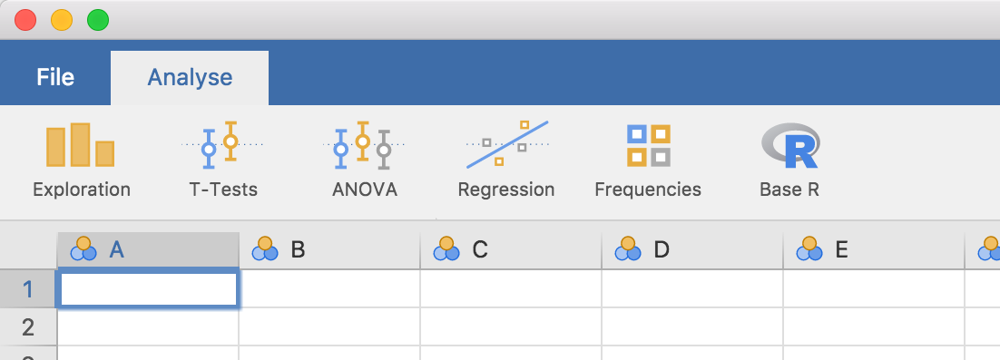

Getting Started
Source:vignettes/dev.jamovi.org-master/tuts0101-getting-started.Rmd
tuts0101-getting-started.RmdBefore we begin, analyses in jamovi are written in the R programming language. This tutorial assumes you have some knowledge of R, and ideally some experience in writing R packages.
That out of the way, let’s begin!
Development of modules for jamovi requires the jmvtools
package. In this tutorial we will:
- install
jmvtools - ensure that
jmvtoolscan find jamovi - build and install a jamovi module from GitHub
Install jmvtools
jmvtools is available from the jamovi repo, and can be
installed in R with:
install.packages('jmvtools', repos=c('https://repo.jamovi.org', 'https://cran.r-project.org'))Check jmvtools can find jamovi
Now you have jmvtools installed, we can check whether it
can locate your jamovi installation:
jmvtools::check()jmvtools searches for jamovi in what might be considered
’usual places`, such as:
/Applications/usr/lib/jamoviC:\Program Files
If jmvtools can’t find it, you can specify the path in
the call to check():
jmvtools::check(home='C:\\Users\\jonathon\\Documents\\jamovi')(you should substitute in your own path, unless your username is jonathon, and you’ve got jamovi in your documents folder).
If you have to specify this path, you can set this for the remainder
of the session with options():
options(jamovi_home='C:\\Users\\jonathon\\Documents\\jamovi')Install a Module
Now we have jmvtools installed and working, we can use
it to build and install a module. If you haven’t already, start up
jamovi. Next we’ll download a module from GitHub, build and install it.
we’ll use the Base R
module – you can download it using the direct link here.
Unzip the source directory and open the project file
jmvbaseR.Rproj in RStudio (or just set your working
directory to the source’s directory). Now we can call the
install() function:
jmvtools::install() # not to be mistaken for devtools::install()This will build the module, and install it into jamovi.
If you turn now to your open jamovi window, you’ll see a new ‘Base R’
menu has appeared on the ribbon, with a set of new analyses. The ability
to install and update jamovi analyses from R turns out to be pretty
nifty, because as we’ll see in the next section, we can make changes to
an analysis, run jmvtools::install() again, and immediately
see those changes reflected in jamovi. This makes developing and testing
jamovi analyses a breeze!

Next: Creating a Module